Statement review sample: Digital twin starter kit: site-drawing / supplied-extraction
A stratified random sample of 75 of 1078 statements (seed 1031). Strata: item (the items themselves: identity, attributes and other relations) 15/359, network (network layer: a drawn line network and what is attached to it) 15/222, network_pair (pairwise link: two items on the same drawn line network (the tracer's links)) 15/345, non_pipe (drawn lines that are not pipe: instrument connections and taps, actuator stems, nozzle stubs) 15/34, pipe (pipe layer: a pipe segment or pipe junction (what is piped directly to what)) 15/118
Why this page exists. Everything this model says can be said as a plain
statement, and every statement points at where it came from: a box on a drawing sheet, a page of a report, a field of
a model. Checking a sample of statements against their sources turns “does this look right?” into a measured
error rate, and lets someone who knows the unit check it in plain language without reading JSON.
Two separate verdicts, never mixed.Matches its source: does the drawing box or report page say
this? Anyone can check that. True in the plant: is it actually so on the unit today? Only an operator, a
walkdown or live data can say, and only for a statement that matched its source (the second box stays locked until
the first says match). The “machine” line, where shown, only proves the export says what the model
says, not that the model is right.
An instrument line, not a pipe, runs directly from PSV 1407 to untagged valve S0-VL012, with no junction or other item between.
connection · layer: non_pipe · st-b24e8cc624fa
Source: no source of its own (the model's source document: OPEN100-0, revision public, page 1)
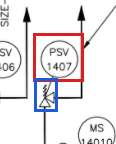
no source of its own: the line was traced, not read from a box. The crop shows both ends (red, blue) so you can follow it on the sheet
PT 14085 in SYS-0 · 1 statement(s)
PT 14085 and untagged valve S0-VL015 are on the same drawn line network (line network S0-NET007): lines, bends, junctions or crossings join them with no item between. This does not say a pipe runs directly from one to the other.
Source: no source of its own (the model's source document: OPEN100-0, revision public, page 1)
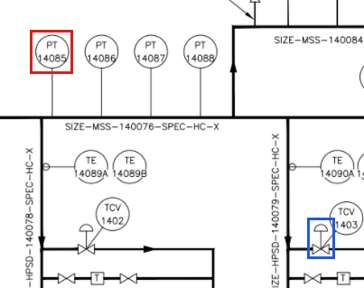
no source of its own: the line was traced, not read from a box. The crop shows both ends (red, blue) so you can follow it on the sheet
PT 14086 in SYS-0 · 1 statement(s)
An instrument line, not a pipe, runs directly from PT 14086 to instrument tap S0-JN-366-276, with no junction or other item between.
connection · layer: non_pipe · st-8fe0923ede0e
Source: no source of its own (the model's source document: OPEN100-0, revision public, page 1)
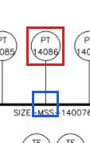
no source of its own: the line was traced, not read from a box. The crop shows both ends (red, blue) so you can follow it on the sheet
PT 14087 in SYS-0 · 1 statement(s)
PT 14087 and untagged valve S0-VL009 are on the same drawn line network (line network S0-NET007): lines, bends, junctions or crossings join them with no item between. This does not say a pipe runs directly from one to the other.
Source: no source of its own (the model's source document: OPEN100-0, revision public, page 1)
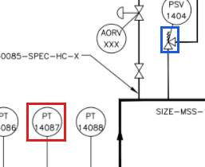
no source of its own: the line was traced, not read from a box. The crop shows both ends (red, blue) so you can follow it on the sheet
PT 14088 in SYS-0 · 2 statement(s)
An instrument line, not a pipe, runs directly from PT 14088 to instrument tap S0-JN-408-276, with no junction or other item between.
connection · layer: non_pipe · st-a43150d0aecf
Source: no source of its own (the model's source document: OPEN100-0, revision public, page 1)
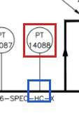
no source of its own: the line was traced, not read from a box. The crop shows both ends (red, blue) so you can follow it on the sheet
PT 14088 and untagged general S0-GN009 are on the same drawn line network (line network S0-NET007): lines, bends, junctions or crossings join them with no item between. This does not say a pipe runs directly from one to the other.
An instrument line, not a pipe, runs directly from RE 1403 to untagged general S0-GN007, with no junction or other item between.
connection · layer: non_pipe · st-ecbda9f3d217
Source: no source of its own (the model's source document: OPEN100-0, revision public, page 1)
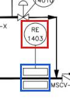
no source of its own: the line was traced, not read from a box. The crop shows both ends (red, blue) so you can follow it on the sheet
T (S0-GN005) in SYS-0 · 1 statement(s)
T (S0-GN005) and untagged valve S0-VL004 are on the same drawn line network (line network S0-NET010): lines, bends, junctions or crossings join them with no item between. This does not say a pipe runs directly from one to the other.
Source: no source of its own (the model's source document: OPEN100-0, revision public, page 1)
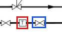
no source of its own: the line was traced, not read from a box. The crop shows both ends (red, blue) so you can follow it on the sheet
T (S0-GN012) in SYS-0 · 1 statement(s)
T (S0-GN012) and untagged valve S0-VL026 are on the same drawn line network (line network S0-NET021): lines, bends, junctions or crossings join them with no item between. This does not say a pipe runs directly from one to the other.
Source: no source of its own (the model's source document: OPEN100-0, revision public, page 1)
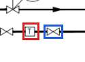
no source of its own: the line was traced, not read from a box. The crop shows both ends (red, blue) so you can follow it on the sheet
TE 14084A in SYS-0 · 1 statement(s)
An instrument line, not a pipe, runs directly from TE 14084A to instrument tap S0-JN-274-318, with no junction or other item between.
connection · layer: non_pipe · st-192d97093355
Source: no source of its own (the model's source document: OPEN100-0, revision public, page 1)
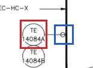
no source of its own: the line was traced, not read from a box. The crop shows both ends (red, blue) so you can follow it on the sheet
TE 14089A in SYS-0 · 1 statement(s)
TE 14089A and untagged general S0-GN009 are on the same drawn line network (line network S0-NET007): lines, bends, junctions or crossings join them with no item between. This does not say a pipe runs directly from one to the other.
An instrument line, not a pipe, runs directly from TE 14091A to instrument tap S0-JN-614-274, with no junction or other item between.
connection · layer: non_pipe · st-7bac38ed1409
Source: no source of its own (the model's source document: OPEN100-0, revision public, page 1)
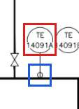
no source of its own: the line was traced, not read from a box. The crop shows both ends (red, blue) so you can follow it on the sheet
TE 14091A and off-page connector “TBS PID 240-1 TURBINE SYSTEM” (S0-OP003) are on the same drawn line network (line network S0-NET022): lines, bends, junctions or crossings join them with no item between. This does not say a pipe runs directly from one to the other.
Source: no source of its own (the model's source document: OPEN100-0, revision public, page 1)
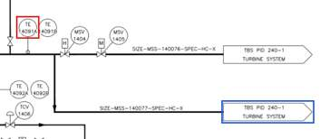
no source of its own: the line was traced, not read from a box. The crop shows both ends (red, blue) so you can follow it on the sheet
TE 14091A and untagged valve S0-VL031 are on the same drawn line network (line network S0-NET022): lines, bends, junctions or crossings join them with no item between. This does not say a pipe runs directly from one to the other.
Source: no source of its own (the model's source document: OPEN100-0, revision public, page 1)
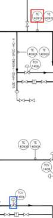
no source of its own: the line was traced, not read from a box. The crop shows both ends (red, blue) so you can follow it on the sheet
TE 14092A in SYS-0 · 2 statement(s)
TE 14092A and untagged valve S0-VL025 are on the same drawn line network (line network S0-NET022): lines, bends, junctions or crossings join them with no item between. This does not say a pipe runs directly from one to the other.
untagged general S0-GN003 in SYS-0 · 2 statement(s)
Untagged general S0-GN003 and TE 14084A are on the same drawn line network (line network S0-NET004): lines, bends, junctions or crossings join them with no item between. This does not say a pipe runs directly from one to the other.
untagged general S0-GN006 in SYS-0 · 1 statement(s)
A pipe runs directly from untagged general S0-GN006 to untagged valve S0-VL005, with no junction or other item between.
connection · layer: pipe · st-ec532bded1b0
Source: no source of its own (the model's source document: OPEN100-0, revision public, page 1)
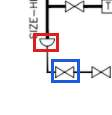
no source of its own: the line was traced, not read from a box. The crop shows both ends (red, blue) so you can follow it on the sheet
untagged valve S0-VL002 in SYS-0 · 1 statement(s)
Untagged valve S0-VL002 and untagged valve S0-VL007 are on the same drawn line network (line network S0-NET007): lines, bends, junctions or crossings join them with no item between. This does not say a pipe runs directly from one to the other.
Untagged valve S0-VL009 and untagged valve S0-VL013 are on the same drawn line network (line network S0-NET007): lines, bends, junctions or crossings join them with no item between. This does not say a pipe runs directly from one to the other.
Source: no source of its own (the model's source document: OPEN100-0, revision public, page 1)
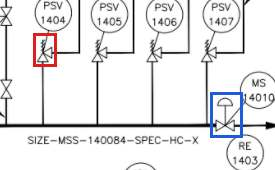
no source of its own: the line was traced, not read from a box. The crop shows both ends (red, blue) so you can follow it on the sheet
untagged valve S0-VL010 in SYS-0 · 2 statement(s)
Untagged valve S0-VL010 and untagged general S0-GN009 are on the same drawn line network (line network S0-NET007): lines, bends, junctions or crossings join them with no item between. This does not say a pipe runs directly from one to the other.
Untagged valve S0-VL014 and untagged general S0-GN009 are on the same drawn line network (line network S0-NET007): lines, bends, junctions or crossings join them with no item between. This does not say a pipe runs directly from one to the other.
Untagged valve S0-VL031 and untagged valve S0-VL032 are on the same drawn line network (line network S0-NET022): lines, bends, junctions or crossings join them with no item between. This does not say a pipe runs directly from one to the other.
Source: no source of its own (the model's source document: OPEN100-0, revision public, page 1)
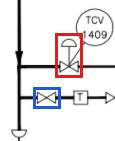
no source of its own: the line was traced, not read from a box. The crop shows both ends (red, blue) so you can follow it on the sheet
SYS-0 in the plant · 1 statement(s)
SYS-0 is part of the plant.
connection · layer: item · st-b420cbb44a62
Source: no source of its own (the model's source document: OPEN100-0, revision public, page 1)
no source of its own
instrument tap S0-JN-342-307 in the plant · 1 statement(s)
Instrument tap S0-JN-342-307 is the point on the drawing where TE 14089A's instrument line meets a pipe, which carries on through it (an instrument tap, not a pipe tee).
instrument tap S0-JN-345-276 in the plant · 1 statement(s)
Instrument tap S0-JN-345-276 is the point on the drawing where PT 14085's instrument line meets a pipe, which carries on through it (an instrument tap, not a pipe tee).
instrument tap S0-JN-387-276 in the plant · 1 statement(s)
Instrument tap S0-JN-387-276 is the point on the drawing where PT 14087's instrument line meets a pipe, which carries on through it (an instrument tap, not a pipe tee).
instrument tap S0-JN-587-318 in the plant · 1 statement(s)
Instrument tap S0-JN-587-318 is the point on the drawing where TE 14092A's instrument line meets a pipe, which carries on through it (an instrument tap, not a pipe tee).
instrument tap S0-JN-611-535 in the plant · 1 statement(s)
Instrument tap S0-JN-611-535 is the point on the drawing where TE 14093A's instrument line meets a pipe, which carries on through it (an instrument tap, not a pipe tee).
line network S0-NET008 in the plant · 1 statement(s)
Line network S0-NET008 is one drawn line network: lines joined by bends, junctions or crossings with no item between, with 2 items attached; it holds no pipe, only 1 instrument line.
pipe tee S0-JN-585-278 in the plant · 1 statement(s)
A pipe runs directly from pipe tee S0-JN-585-278 to pipe tee S0-JN-586-359, with no pipe tee or other item between; the instrument tap of TE 14092A is on it.
connection · layer: pipe · st-2e1141b6bafd
Source: no source of its own (the model's source document: OPEN100-0, revision public, page 1)
no source of its own: the line was traced, not read from a box. The crop shows both ends (red, blue) so you can follow it on the sheet
pipe tee S0-JN-586-378 in the plant · 2 statement(s)
A pipe runs directly from pipe tee S0-JN-586-378 to untagged general S0-GN013, with no junction or other item between.
connection · layer: pipe · st-ff75d8de2d47
Source: no source of its own (the model's source document: OPEN100-0, revision public, page 1)
no source of its own: the line was traced, not read from a box. The crop shows both ends (red, blue) so you can follow it on the sheet
A pipe runs directly from pipe tee S0-JN-586-378 to untagged valve S0-VL025, with no junction or other item between.
connection · layer: pipe · st-c9b2e1c2fcbd
Source: no source of its own (the model's source document: OPEN100-0, revision public, page 1)
no source of its own: the line was traced, not read from a box. The crop shows both ends (red, blue) so you can follow it on the sheet
pipe tee S0-JN-658-378 in the plant · 2 statement(s)
A pipe runs directly from pipe tee S0-JN-658-378 to off-page connector “HIGH PRESSURE STEAM DRAINS HPD PID 190-1” (S0-OP004), with no junction or other item between.
connection · layer: pipe · st-b7a7f3ed5aca
Source: no source of its own (the model's source document: OPEN100-0, revision public, page 1)
no source of its own: the line was traced, not read from a box. The crop shows both ends (red, blue) so you can follow it on the sheet
Pipe tee S0-JN-658-378 is on drawn line network S0-NET036.